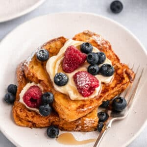

|  |
- 1 loaf brioche bread
- 6 large eggs
- 1 1/2 cups milk
- 1 tablespoon honey
- 2 teaspoons grated orange zest
- 1 1/2 teaspoons pure vanilla extract
- 1/2 teaspoon ground cinnamon
- 1/2 teaspoon salt
- 1 bag powdered sugar
- berries of your choosing
- unsalted butter or cooking spray
|